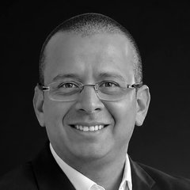

Grabación de la clase en vivo
Construye un patrimonio de $200K mínimo, desde cero e incluso con poco capital
Si no pudiste estar en vivo, o la quieres ver de nuevo, aquí está completa. Busca un lugar tranquilo, ten a mano algo para anotar y dale play.
📅 Jueves 19 de noviembre⏱️ 1 h 25 min🎙️ Alejandro Quiñones
Lo que vas a aprender
Las ideas clave de la clase, para que no se te escape ninguna.
1
Por qué invertir y no solo ahorrarSi quieres pagar la universidad de tus hijos o tener tu propio fondo para no depender de nadie en tu vejez, el ahorro solo no te va a llevar ahí.
2
Una advertencia honestaEsto no es para quien busca fórmulas mágicas: es un proceso con método, paciencia y disciplina.
3
Los 3 tipos de inversiónBienes raíces, negocios y mercado bursátil, y por qué nos enfocamos en el mercado bursátil.
4
Los dos caminos para invertirMediano y largo plazo para crear riqueza, o corto plazo para tomar ganancias más rápido. Cada uno con su paso a paso.
5
Se puede empezar con pocoEn el camino de largo plazo puedes arrancar con aportes desde US$75 al mes, con índices y ETF como base.
6
El Método RCR: Rentabilidad, Consistencia y RiesgoPérdidas pequeñas y ganancias grandes. Viste operaciones reales donde la ganancia más pequeña supera varias pérdidas juntas.
7
Inteligencia artificial a tu favorCómo el Método RCR + IA te ayuda a detectar acciones con alto potencial y oportunidades en el mercado.
8
Testimonios y herramientas realesLa experiencia de alumnos aplicando el método y las herramientas que usamos para escanear el mercado.
Los dos caminos que viste en la clase
Mediano y largo plazo
Crear riqueza
- Asignas un valor (único o mensual)
- Abres tu cuenta con un bróker
- Inviertes en índices y ETF
- Aplicas el Método RCR + IA
- Sumas acciones recomendadas
- Llegas a tu meta
Corto plazo
Tomar ganancias
- Asignas un valor
- Abres tu cuenta con un bróker
- Aplicas el Método RCR + IA para encontrar oportunidades
- Operas y llegas a tu meta
“Mis pérdidas son pequeñas. Mis ganancias, grandes.”
Esa es la diferencia del Método RCR.
📌 Mantente atento mañana viernes 20 de noviembre.
Te escribo por la comunidad y por correo con lo que te anuncié al final de la clase.

Alejandro QuiñonesEstratega de inversión · Método RCR